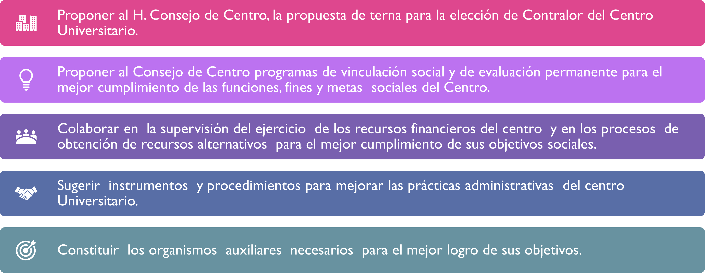

Ubicación rectoría
Gobierno de CUCEI
El CUCEI promueve la construcción de un “gobierno académico”, cuya gestión privilegié lo académico, a través del uso eficaz y eficiente de los recursos humanos y financieros que impacten positivamente en la calidad de los servicios e indicadores académicos.
Consejo de centro
El Consejo es la máxima autoridad del Centro Universitario, lo preside el Rector y el Secretario Académico, este último funge como secretario de actas y acuerdos del Consejo. El artículo 51 de la Ley Orgánica establece la composición del Consejo como sigue:
I. El Rector de Centro Universitario;
II. El Secretario Académico;
III. El Secretario Administrativo;
IV. Los Directores de División;
V. Un representante académico, directivo y estudiantil por cada Departamento, siempre que no excedan de cinco Departamentos por División;
VI. El Presidente del Consejo Social del Centro Universitario, y
VII. Un representante general de las siguientes organizaciones:
a) Del personal académico,
b) Del personal administrativo,
c) Del alumnado,
Los tres últimos acreditados por las organizaciones respectivas que agrupen al mayor número de representantes ante el propio Consejo de Centro.
¿De qué se encargan?
Promueven todo lo que tienda al mejoramiento:
Consejo social
El Consejo Social es un órgano consultivo y de vinculación, integrado por un representante de cada una de las siguientes entidades: Gobierno del Estado de Jalisco, Gobierno Municipal de Guadalajara, H. Consejo de Centro, Sistema de Educación Media Superior, Personal docente del CUCEI, Alumnado y Padres de familia; tres representantes de la comunidad académica pudiendo ser externos, tres de asociaciones y/o colegios de profesionistas, tres representantes de los sectores productivos; además un Maestro Emérito y el Presidente del Patronato del Centro.
Objetivo: Promover la vinculación entre el Centro Universitario y los diversos sectores de la sociedad, incidiendo en el desarrollo socioeconómico del entorno.
Consejo social - Funciones

Rectoría de centro
Rectoría
En la figura del Rector recae la responsabilidad de ejercer la máxima autoridad unipersonal del centro universitario quien a su vez depende del Consejo de Centro.
Secretaría particular
En la arquitectura de la organización, dependientes directamente de la rectoría, existe la Secretaria Académica y la Secretaría Administrativa que resultan centrales para el funcionamiento del centro universitario, pues desde ambas se ofrecen todos los servicios de apoyo para la vida escolar.
Secretaría técnica
Asistente de rectoría
Asistente de protocolo
Asistente de protocolo
Oficina de comisiones del consejo
Área de convenios y contratos
Área de convenios y contratos
Coordinación de programas docentes
Coordinación de investigación
Unidad de posgrados

Unidad de desarrollo bibliotecario
Para el funcionamiento del CUCEI, resulta clave la coordinación de esfuerzos, y un sentido de transversalidad para la racionalización y optimización de los recursos, para lo cual se prevé la Junta Divisional como órgano consultivo de planeación y coordinación del centro universitario. Lo anterior además de los órganos de gobierno en los que participan académicos, estudiantes, funcionarios y una representación de las organizaciones mayoritarias.
Los coordinadores de posgrado se apoyan en la Junta Académica de cada posgrado, mientras que los coordinadores de carrera, al tener una mayor cantidad de alumnos que atender, se apoyan en diversos comités en los que participan profesores, como son: Comité de Titulación, Comité de Tutorías, Comité Curricular, Comité de Vinculación.
Por su parte cada carrera o posgrado tiene un coordinador de programa educativo, cuya función principal es precisamente coordinar, atender, orientar en forma directa las necesidades de los estudiantes. El coordinador de programa educativo realiza entonces una muy importante función de gestión.
Los departamentos se agrupan para formar una División, la cual los dirige como estructura de gobierno. Las Divisiones son las responsables de los programas educativos, sin embargo, un programa educativo recibe servicios de otros departamentos pertenecientes a otras divisiones.
Por otro lado, los departamentos tienen a su cargo las academias que son agrupaciones de profesores dedicadas a atender problemas relacionados con el aprendizaje de asignaturas comunes o relacionadas mediante por algún objeto de estudio. También son responsables de los laboratorios y de programas de apoyo académico relacionados con su objeto de trabajo. Estas tareas se realizan por el personal académico, como parte de sus actividades extra clase.